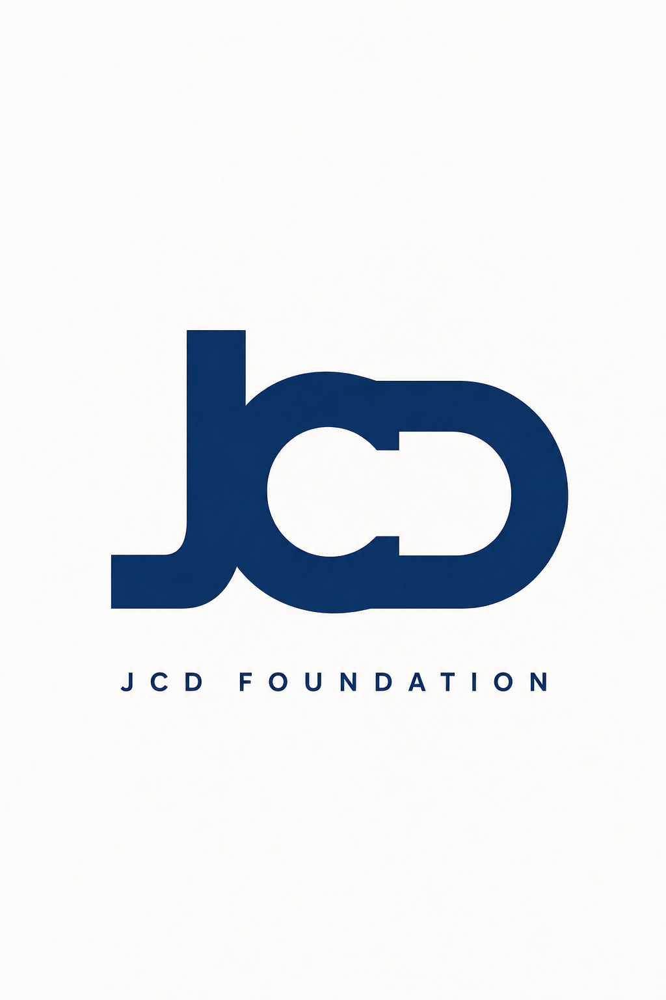

01

Interlocking Monogram
three letters, one mark
The J, C, and D share strokes — they're physically fused into a single navy letterform that reads as one mark first, then resolves into JCD. Pure type, pure construction. The most ownable of the six because nobody else has this exact letterform.